Triunghiul Expunerii
Orice fotografie depinde de trei elemente principale care controlează cantitatea de lumină ce ajunge la senzorul camerei: Timpul de Expunere (Shutter Speed), Diafragma (Aperture / F-Stop) și Sensibilitatea (ISO). Echilibrul perfect dintre acestea determină expunerea corectă a imaginii.
Detalii Avansate: Acest echilibru funcționează ca un sistem de vase comunicante. Dacă modifici un parametru pentru un efect vizual (ex: blurarea fundalului), trebuie să compensezi ajustând celălalt parametru pentru a menține aceeași expunere. De exemplu, un timp de expunere mai scurt va necesita o diafragmă mai deschisă sau un ISO mai mare.

Shutter Speed (Timpul de Expunere)

Shutter Speed (Timpul de Expunere)Reprezintă durata în care obturatorul camerei stă deschis pentru a lăsa lumina să lovească senzorul. Se măsoară în fracțiuni de secundă (ex: 1/125s) sau secunde întregi (ex: 2").
- Timp scurt (ex: 1/1000s): "Îngheață" complet mișcarea (fotografie sportivă, mașini în mișcare). Lasă mai puțină lumină să intre.
- Timp lung (ex: 1/2s): Creează efectul de "motion blur". Lasă foarte multă lumină să intre și necesită de obicei un trepied.
Sfat Practic (Regula distanței focale): Pentru a evita pozele mișcate din cauza tremurului mâinilor, timpul tău de expunere nu ar trebui să fie mai lung decât `1 / distanța focală`. De exemplu, dacă folosești un obiectiv de 50mm, încearcă să fotografiezi cu cel puțin 1/50s!
F-Stop / Diafragma (Aperture)
Reprezintă deschiderea obiectivului, controlând cantitatea fizică de lumină care trece prin lentilă. Se măsoară în valori "f" (ex: f/1.8, f/8, f/22).
- F-Stop mic (ex: f/1.8): Deschidere foarte mare. Creează un fundal puternic estompat (Depth of Field îngust), ideal pentru portrete.
- F-Stop mare (ex: f/16): Deschidere foarte mică. Menține totul în claritate de la prim-plan până la fundal, ideal pentru peisaje.
Sfat Practic (Claritatea maximă): Deși o diafragmă de f/22 menține o arie imensă focalizată, ea declanșează un fenomen optic numit "difracție" care face imaginea ușor încețoșată. Majoritatea obiectivelor ating claritatea absolută (sweet spot-ul) dacă sunt închise cu 2-3 stopuri (de obicei în zona f/5.6 – f/8).
Sensibilitatea ISO
Măsoară sensibilitatea senzorului digital la lumină. Valoarea de bază este de obicei ISO 100.
- ISO mic (100 - 400): Oferă o imagine extrem de clară, curată, fără "zgomot de imagine". Folosit pe timp de zi.
- ISO mare (1600 - 6400+): Permite fotografierea pe timp de noapte, dar introduce o granulație (grain) vizibilă care scade calitatea imaginii.
Sfat Practic: Creșterea valorii ISO ar trebui să fie întotdeauna ultima ta soluție! Ajustează-l doar atunci când ai deschis deja diafragma la maximum și ai redus timpul de expunere la viteza minimă de siguranță pentru a ține camera din mână.